漫画回读
完整五页漫画
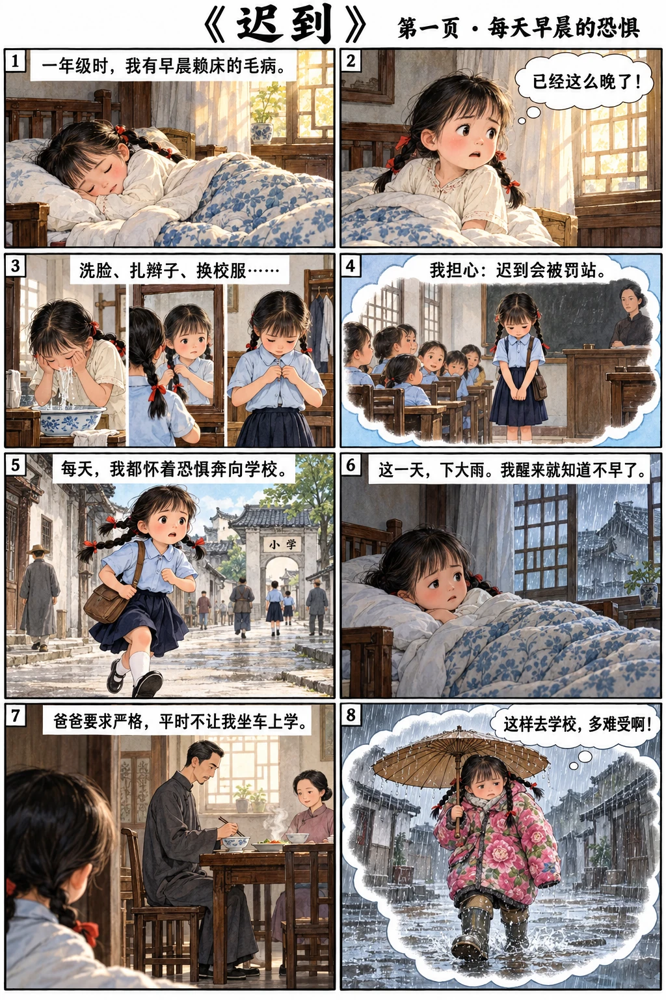
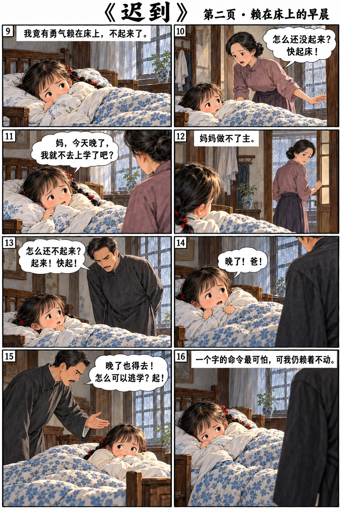
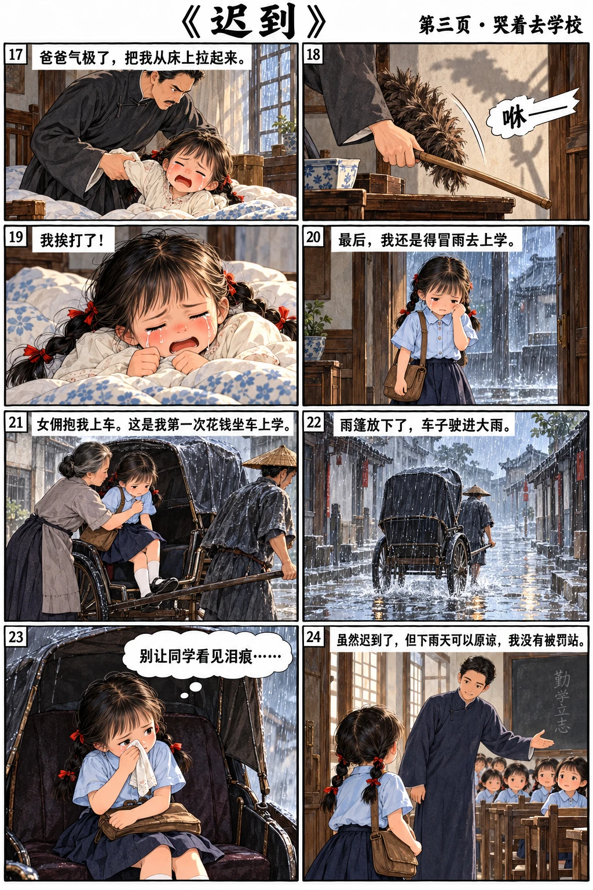

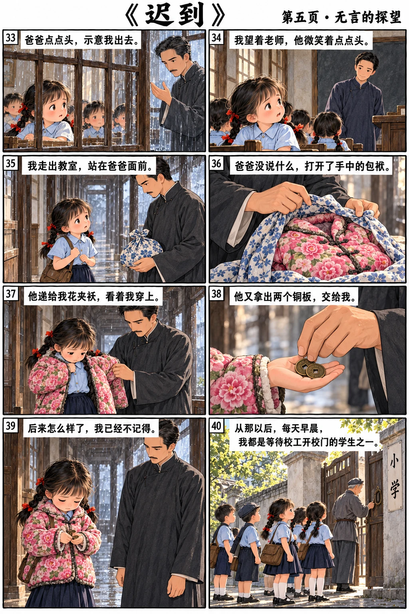
第1段
我在一年级的时候，有早晨赖床的毛病。每天早晨醒来，看到阳光照到玻璃窗上，我的心里就是一阵怕：已经这么晚了，等我起来，洗脸，扎辫子，换制服，再到学校去，很可能会因迟到而被罚站。同学们的眼光，会一个个向你望过来。所以我每天都是怀着恐惧的心情，奔向学校去。
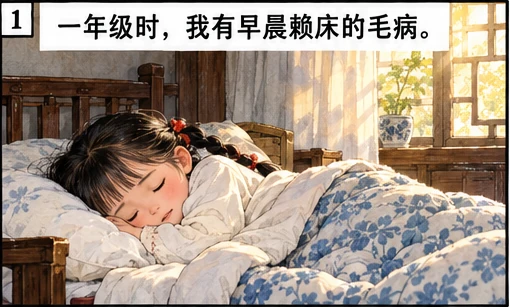
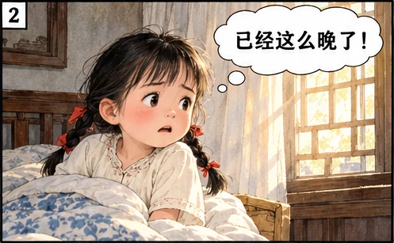
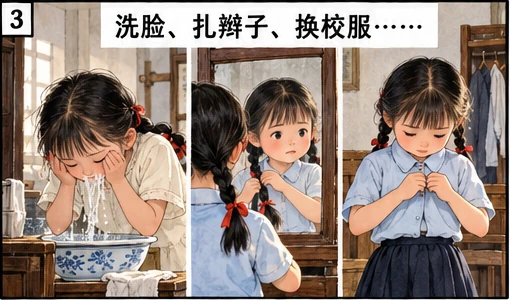
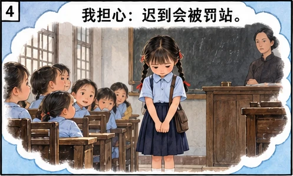
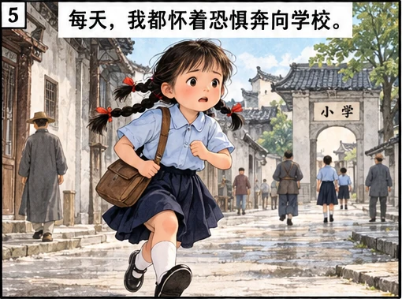
第2段
有一天，下大雨，我醒来就知道不早了，爸爸已经在吃早茶。雨这么大，我又不能坐车上学，因为爸爸对我要求很严格。我听着雨声，想着大雨，心里愁得不得了：晚上学不但要被罚站，而且得穿上肥大的夹袄，拖着不合脚的雨鞋，撑着一把大油纸伞，走去学校，那滋味可不好受！想到要这么不舒服地上学，我竟有勇气赖在床上不起来了。
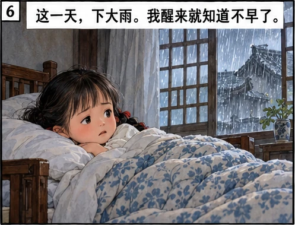
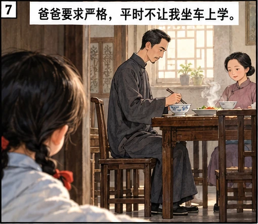
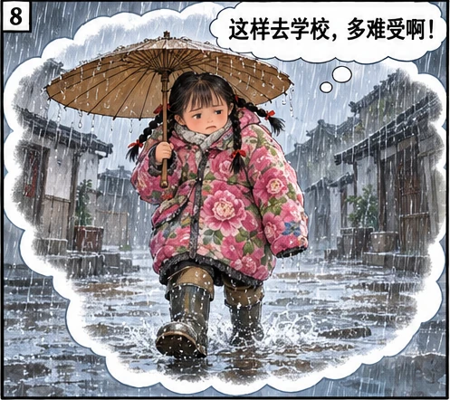
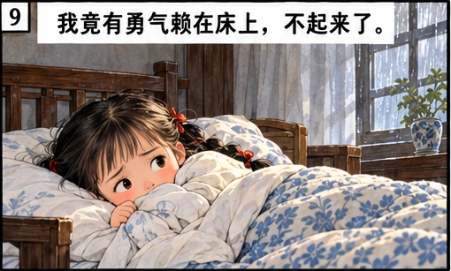
第3段
妈妈进来，看我还没有起床，吓了一跳，催促着我。但是我皱紧了眉头，低声向她哀求：
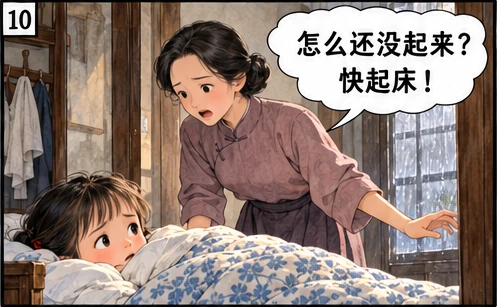
第4段
“妈，今天晚了，我就不去上学了吧？”
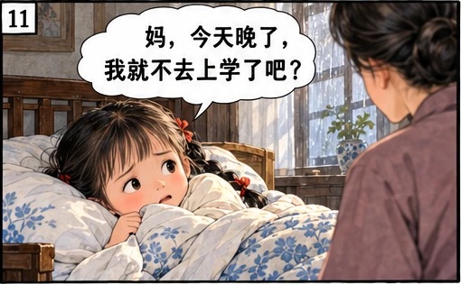
第5段
妈妈做不了主，她转身出去后，爸爸就进来了。他瘦瘦高高的，站在床前，瞪着我：
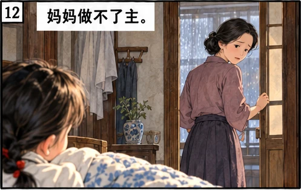
第6段
“怎么还不起来？快起！快起！”
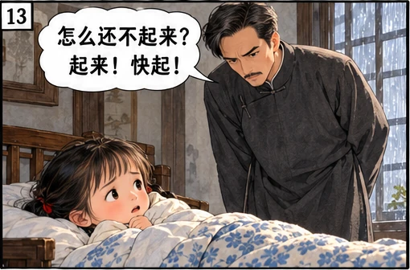
第7段
“晚了！爸！”我硬着头皮说。
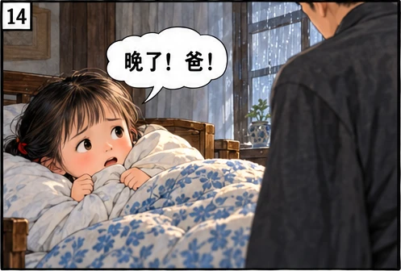
第8段
“晚了也得去！怎么可以逃学？起！”
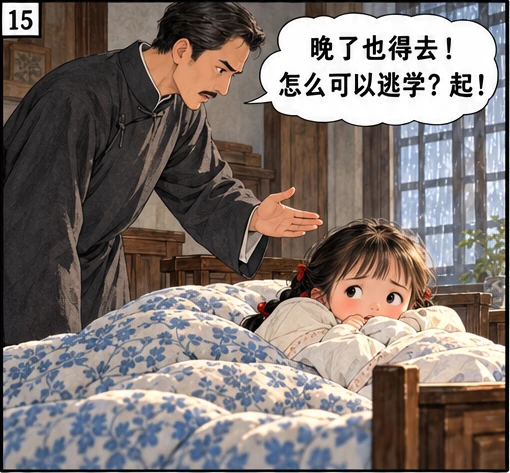
第9段
一个字的命令最可怕，但是我怎么啦？居然有勇气赖在床上不挪窝。
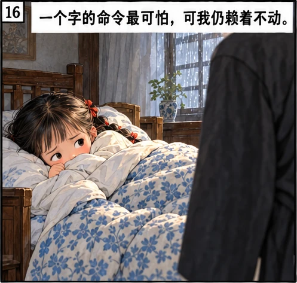
第10段
爸爸气极了，一把把我从床上拖起来，我的眼泪就流出来了。爸爸左看右看，从桌上抄起鸡毛掸子，倒转过来，“嗖嗖”在空中一抡，发出咻咻的声音。
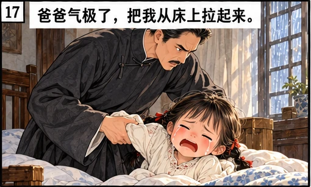
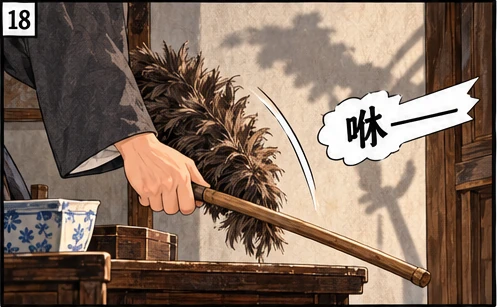
第11段
我挨打了！
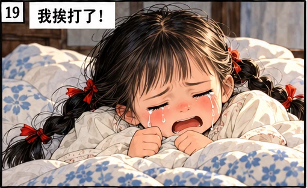
第12段
虽然有些不情愿，最后我还是得冒着大雨去上学。我像一只狼狈的小狗，被女佣抱上了人力车，第一次花钱坐车上学。
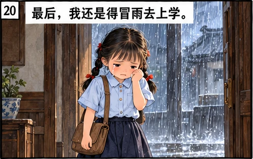
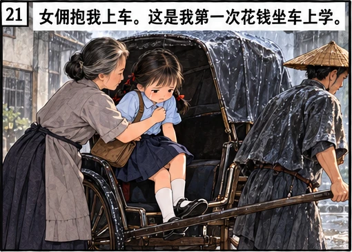
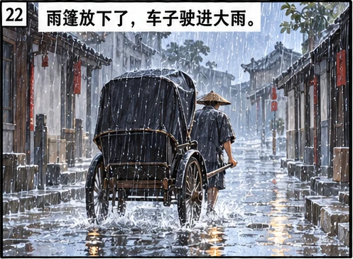
第13段
我坐在放下雨篷的人力车里，一边哭着，一边擦着眼角的泪痕，怕同学看到后嘲笑我。
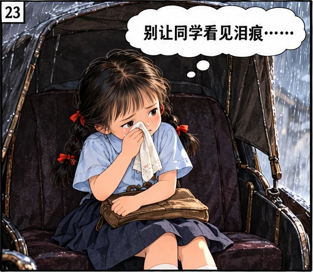
第14段
虽然迟到了，但是我没有被罚站，这是因为下雨天可以原谅的缘故。

第15段
老师让我们先静默。老师说：“想想看，你是不是听爸妈和老师的话？昨天的功课有没有做好？早晨跟爸妈有礼貌地道别了吗？”我听到这儿，鼻子一酸，抽搭了一下，幸好我的眼睛是闭着的，泪水不至于流出来。
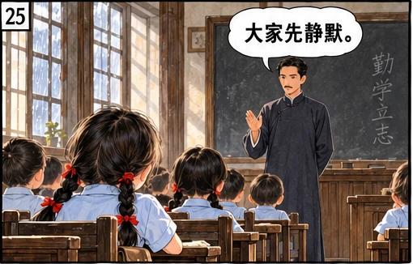
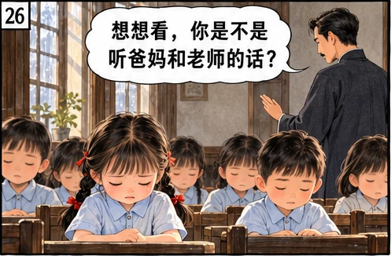
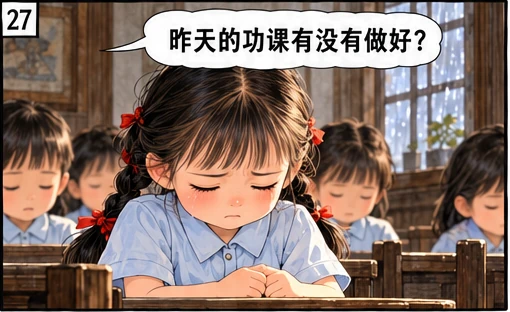
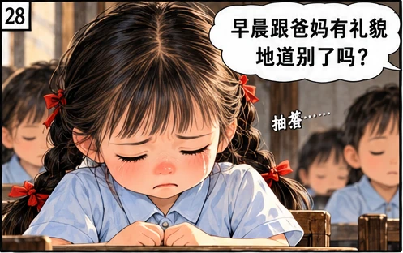
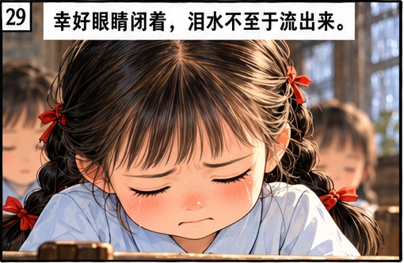
第16段
在静默时，我的肩头被拍了一下，睁开眼，原来是老师站在我的位子旁边。他让我向窗外看去。我猛一转头，是爸爸那瘦高的影子！
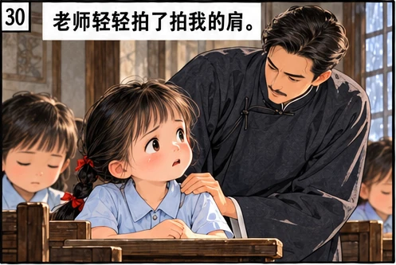
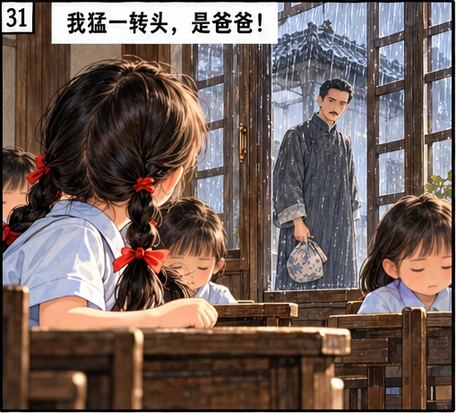
第17段
我刚平静下来的心一下子又提到了嗓子眼！爸爸为什么追到学校来？爸爸点头示意我出去。我看着老师，征求他的同意。老师微笑着点点头。
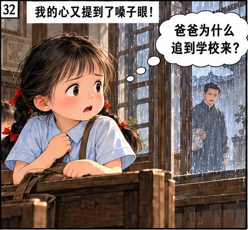
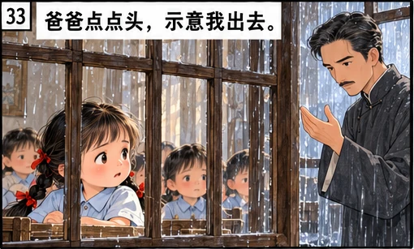
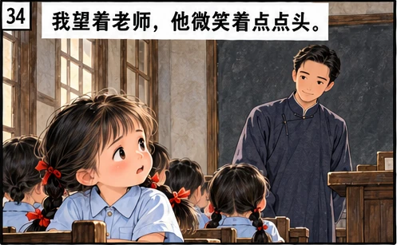
第18段
我走出教室，站在爸爸面前。爸爸没说什么，打开了手中的包袱，拿出我的花夹袄。他递给我，看着我穿上，又拿出两个铜板给我。
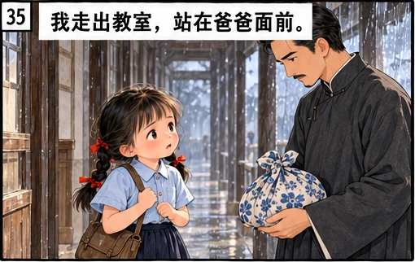
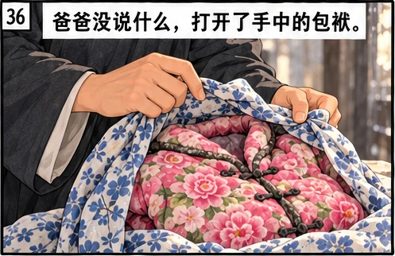
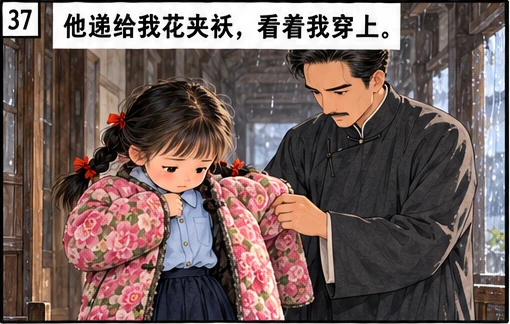
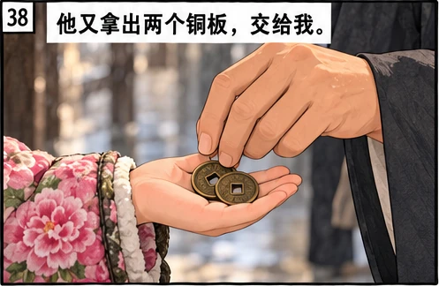
第19段
后来怎么样了，我已经不记得。只记得，从那以后，每天早晨我都是等待校工开校门的学生之一。
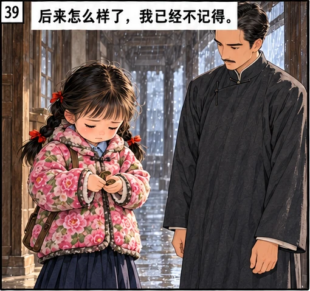
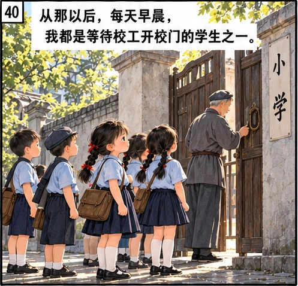